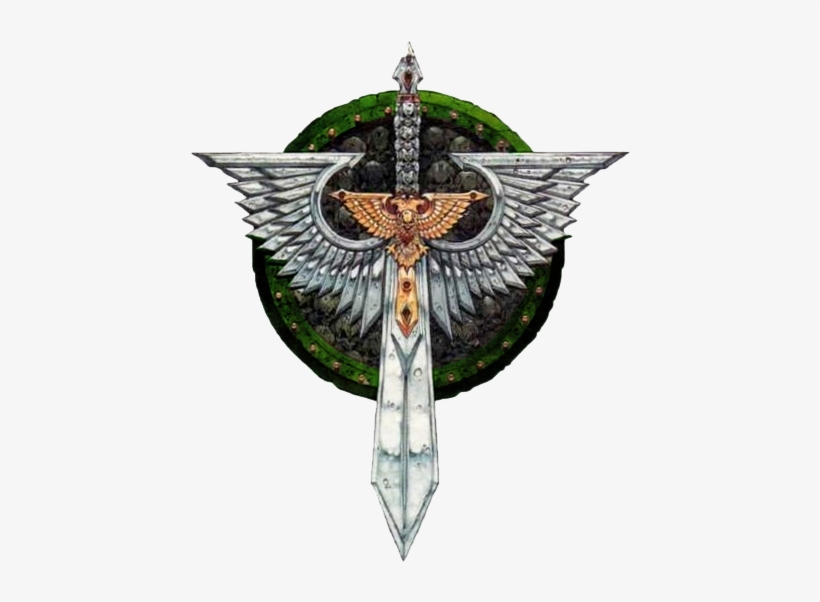
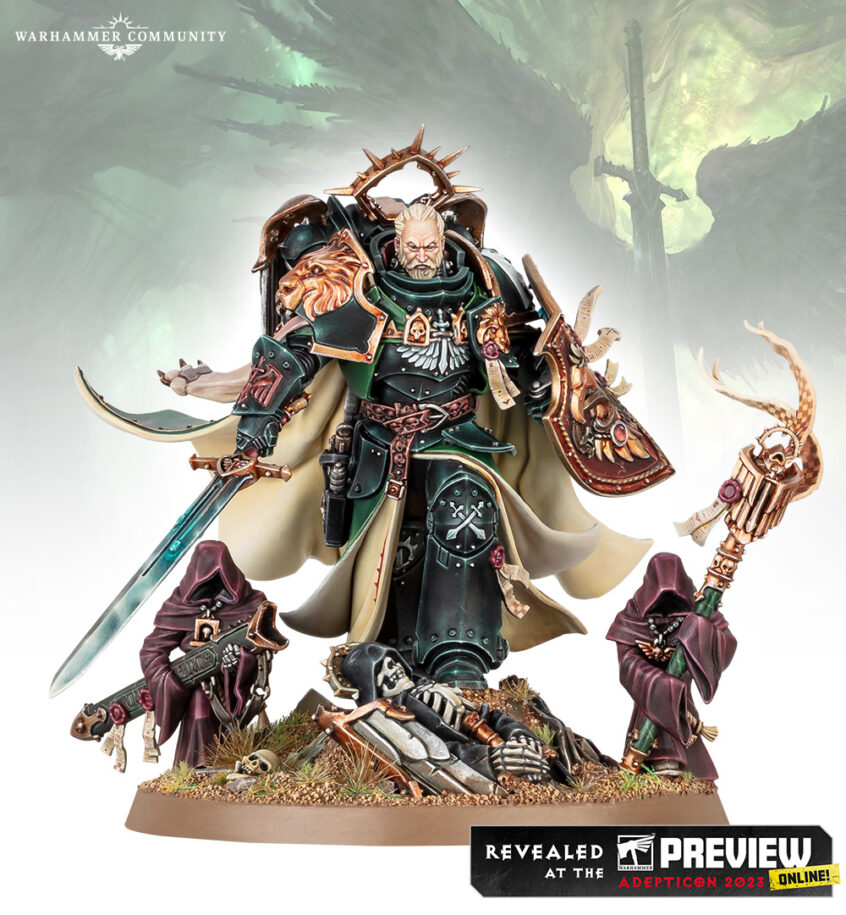

The Dark Angels were the first legion of the twenty original Space Marine Legions. Their Primarch (leader) is Lion El'Jonson. The lion would still be loyal to the Emperor during the Horus Heresy, but after the Heresy the legion was re-organized and divided into several chapters during the Second Founding.
The leader (primarch) of the Dark Angels was Lion El'Jonson or referred to as The Lion was the first son of the emperor and was known for his tactical genius, strategy in war, being level headed, and being the best sword duelist out of all his brothers. The lion was a vey secretive figure and often kept to himself and didn't talk much to his other brothers, Because of this his brothers had a hard time trusting him, especialy during the Horus Heresy. But the Lion remained loyal to the emperor and would go on his own crusade for revenge against the traitors and would win a lot of battles and be a reminder that strategy is the key to victory.
© 2024 Dark Angels legion